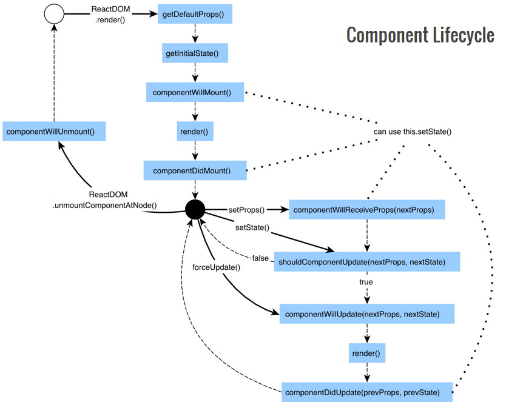
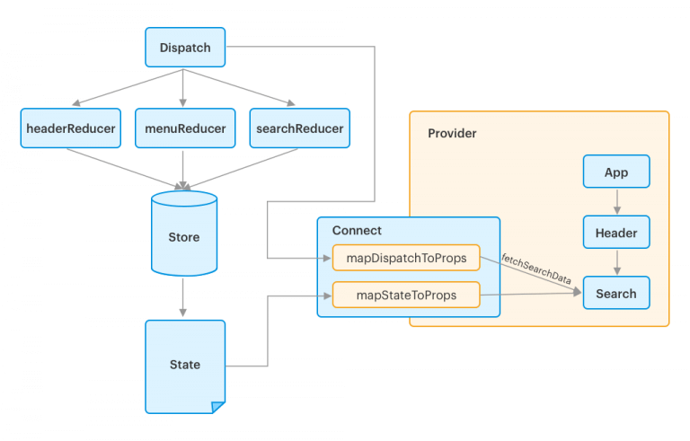

React
Table of Contents
1 React
1.1 Structure

1.2 Performance Model
Performance Model | React Express
| Operation | Cost | Descrption |
|---|---|---|
| DOM manipulation | Slow | Modifying the DOM is slow. React is built to modify that DOM as little as possible. React builds anin-memory representation of the components rendered, and then syncs this representation to the DOM. As components are updated, React will update the in-memory representation, and then make the least amount of changes to the DOM possible. This is what keeps the application fast. React does this automatically most of the time - however, hints can be given about when and how to update the DOM to improve performance. This is especially relevant when dealing with hundreds or thousands of components, in the case of large lists. |
| Component render | Fast | Components can re-render very frequently without a noticeable performance impact. It's common for render() to be called many times as the state or props of a component change. This is part of the magic of React. In other JavaScript libraries, you may have tried to reduce calls to render() in order to limit DOM updates and improve performance. In React, reducing re-renders is only for particularly complex or expensive components. Note: render() generally refers to the render method of components getting called as part of the component lifecycle. This doesn't refer to actually updating the DOM, which React handles automatically based on what is returned from render() methods. |
shouldComponentUpdate() |
Very fast | In cases where component render is happening too frequently and causing performance issues, React gives more control over the component lifecycle with shouldComponentUpdate(), allowing to choose exactly when a component does and doesn't re-render. When this method isn't defined, components will always re-render whenever their state or props change. Defining shouldComponentUpdate() allows to manually compare whatever data is needed to determine whether or not the component should re-render. Return true to trigger a render() call and false to prevent it. |
2 Project Structure
<project>/ node_modules/ # Dependency files public/ # Static files src/ # Source code actions/ # Action creators components/ reducers/ index.js package.json # Dependencies and configurations package.lock.json # Exact versions of dependencies
3 JSX
JSX 会被 Babel 转换为 JS 函数调用，如 <div /> 转换为 React.createElement('div') ，因此虽然代码内不显式引用 React ，但是需要 import 。
ReactDOM provides built-in DOM-node components with same names as the corresponding HTML tags, e.g. <div />, <input />. They don't need to be required when used, that's handled automatically during the JSX language transformation.
3.1 {}
const buttonText = 'Foo'; return <button>{buttonText}</button> function getButtonText() { return 'Foo'; } return <button>{getButtonText()}</button> // 使用 || 提供默认值 return <button>{foo || 'Default'}</button> // 嵌入匿名函数 return <button onClick={e => console.log(e.target.value)}>Submit</button>
const buttonText = 'Foo'; // Foo const buttonText = 1234; // 1234 const buttonText = ['Foo', 'Bar']; // FooBar return <button>{buttonText}</button>
3.2 ${}
const text = 'foo bar'; return <div>{`Some text: ${text}`}</div>
3.3 className
因为 class 是 JS 关键字，JSX 的 class 属性需要替换为 className 。
3.4 htmlFor
因为 for 是 JS 关键字，JSX 的 for 属性需要替换为 htmlFor 。
3.5 style
style 属性的值必须是对象。
return <tag style={{ <attr>: <value>; ... }}></tag>
// CSS 属性名可以使用 camelcase，或者直接使用字符串 return <div style={{ backgroundColor: 'grey' }}></div> return <div style={{ 'background-color': 'grey' }}></div> const elementStyle = { backgroundColor: 'grey' }; return <div style={elementStyle}></div>
4 Component
4.1 Functional Component
const Component = (props) => <tag></tag>;
4.2 Class Component
class Component extends React.Component { render() { return <tag></tag> } }
4.3 Props
<Foo bar="text" ... /> const Foo = (props) => { return <div>{props.bar}</div> } class Foo extends React.Component { render() { return <div>{this.props.bar}</div> } }
4.3.1 children
JSX <Component> 标签内的内容可以通过 props.children 读取。
<ComponentOne> <ComponentTwo /> </ComponentOne> const ComponentOne = (props) => { return <div>{props.children}</div> }
4.3.2 defaultProps
定义 <Component>.defaultProps 可以在未提供 prop 值时使用默认值。
const Foo = (props) => { return <div>{props.bar}</div>; } Foo.defaultProps = { bar: 'default' };
4.3.3 key
Keys help React identify which items have changed, are added, or are removed.
const numbers = [1, 2, 3, 4, 5]; const listItems = numbers.map((number) => <li key={number.toString()}> {number} </li> );
4.4 State
4.4.1 用法
class Component { constructor(props) { super(props); this.state = { <name>: <value> }; // 初始化 } state = { <name>: <value> }; // 初始化简化形式 someFunction() { this.setState({ <name>: <value> }); // 修改 } render() { return <div>{this.state.<name>}</div> // 读取 } }
4.4.2 Controlled element
Controlled element 即将用户输入存储在 state 中，而不是 DOM 中的元素。
class Foo extends React.Component { state = { bar: '' }; render() { return ( <form> <input type="text" value={this.state.bar} onChange={e => this.setState({ bar: e.target.value })} /> </form> ); } }
4.5 Lifecycle

| Lifecycle 函数 | 一般用法 |
|---|---|
constructor() |
One-time setup |
render() |
Return JSX |
componentDidMount() |
Initial data loading |
componentDidUpdate() |
Data loading after props/state change |
componentWillUnmount() |
Cleanup |
4.6 Event Handler
class Foo extends React.Component { handleSubmit = (event) => { // 箭头函数自动 bind event.preventDefault(); } render() { return <form onSubmit={this.handleSubmit}></form>; } }
class Foo extends React.Component { handleSubmit(event) { event.preventDefault(); } render() { return <form onSubmit={(event) => this.handleSubmit(event)}></form>; // 设置 handler 时 bind } }
5 React
5.1 createRef()
class Foo extends React.Component { constructor(props) { super(props); this.inputRef = React.createRef(); } componentDidMount() { this.inputRef.current.focus(); } render() { return <input type="text" ref={this.inputRef} />; } }
6 Redux
6.1 Lifecycle

6.2 Structure


6.3 Action
Action 对象表示发生的事件，如用户动作。
{
type: <ACTION_TYPE>,
<payload> // Optional, A single key/value pair or an object
}
6.4 Action Creator
Action creator 函数返回一个 action 对象。
const fooAction = (param, ...) => { return { type: 'FOO_ACTION', payload: ... }; }
const fooAction = (param, ...) => async (dispatch) => { const response = await ... dispatch({ type: 'FOO_ACTION', payload: ... }); }
6.5 Reducer
Reducer 函数定义当 action 发生时，state 如何变化。Reducer 的参数为 action 发生之前的 state （初始化时为 undefined）和 action 本身，返回值为 action 发生之后的 state，返回值不能为 undefined。
整个应用的 state 由一个 store 对象表示，每个 reducer 维护此对象的一个元素，reducer 和 state 元素的对应关系在 combineReducers() 的调用参数中指定。
const initialState = { bar: 1 }; // 调用时传入的 state 为该 reducer 对应的 state // 需要指定默认值，即初次调用时的初始 state const fooReducer = (previousState = initialState, action) => { switch (action.type) { case 'FOO_ACTION': return [...previousState, action.payload]; // Reducer 不应该修改传入的 state 对象并返回，如： // previousState.push(action.payload); // return previousState; // 应该返回新的 state 对象，否则 Redux 会认为 state 没有发生变化 default: return previousState; } }; // 输出合并的 reducer export default combineReducers({ foo: fooReducer });
6.5.1 combineReducers()
combineReducers() 把多个 reducer 函数合并成一个函数，作为 createStore() 的参数生成 store。
const fooReducer = (state, action) => {} const barReducer = (state, action) => {} const singleReducer = combineReducers({ fooState: fooReducer, barState: barReducer });
6.5.2 State mutation
const fooReducer(state, action) => { return [...state, <v>]; // Add return state.filter((e) => e !== <v>); // Remove return state.map((e) => e === <v1> ? <v2> : e); // Update }
const fooReducer(state, action) => { return {...state, <k>: <v>}; // Add return {...state, <k>: undefined}; // Remove return {...state, <k>: <v>}; // Update }
6.6 Store
Store 是整个应用的 state 的集合，store 对象的每个 key 对应一个 reducer 函数，state 必须通过 reducer 函数进行修改，不能直接修改。
6.6.1 createStore()
const fooReducer = (state, action) => {} const barReducer = (state, action) => {} const singleReducer = combineReducers({ foo: fooReducer, bar: barReducer }); const store = createStore(singleReducer); // store.getState() = { // foo: {...}, // bar: {...}, // }
6.6.2 dispatch()
dispatch() 将遍历调用 store 中的 reducer 函数，传入每个 reducer 函数对应的 state 和当前 action。
const store = createStore(singleReducer); const action = fooAction('bar'); store.dispatch(action);
6.6.3 getState()
返回 state 集合。
const store = createStore(singleReducer); store.getState();
6.7 Provider
6.8 Connect
import { connect } from 'react-redux'; import { fooAction } from '../actions'; class Foo extends React.Component { render() { // this.props = { // foo: ..., // State // fooAction: ... // Action creator // } } } // mapStateToProps 将应用的 state 映射到 component 的 props // 当应用的 state 被 reducer 修改时，component 的 props 会相应变化 // state: 应用的 state 集合 // props: component 当前的 props const mapStateToProps = (state, props) => { // 从 state 中查找当前 component 需要的数据并返回 return { foo: state.foo }; } // 将 action creator 传递给 store // 当 action creator 被调用时，store 会自动调用 dispatch() 将生成的 action 传递给 reducers export default connect(mapStateToProps, { fooAction })(Foo);
6.9 示例 1
const depositAction = (name, amount) => { return { type: 'DEPOSIT', payload: {name: name, amount: amount} } } const withdrawAction = (name, amount) => { return { type: 'WITHDRAW', payload: {name: name, amount: amount} } } const balanceReducer = (state = {}, action) => { if (action.type === 'DEPOSIT' || action.type === 'WITHDRAW') { const name = action.payload.name; const amount = action.payload.amount; let balance = (state.hasOwnProperty(name)) ? state[name] : 0; if (action.type === 'DEPOSIT') { balance += amount; } else if (action.type === "WITHDRAW" && balance >= amount) { balance -= amount; } return Object.assign({}, state, {[name]: balance}); } return state; } const singleReducer = Redux.combineReducers({ balance: balanceReducer }); const bank = Redux.createStore(singleReducer); bank.dispatch(depositAction('Foo', 100)); // bank.getState() = {balance: {Foo: 100}} bank.dispatch(depositAction('Bar', 50)); // bank.getState() = {balance: {Foo: 100, Bar: 50}} bank.dispatch(depositAction('Foo', 50)); // bank.getState() = {balance: {Foo: 150, Bar: 50}} bank.dispatch(withdrawAction('Bar', 30)); // bank.getState() = {balance: {Foo: 150, Bar: 20}}
6.10 示例 2
import React from 'react'; import ReactDOM from 'react-dom'; import { Provider } from 'react-redux'; import { createStore } from 'redux'; import App from './components/App'; import reducers from './reducers'; ReactDOM.render(( <Provider store={createStore(reducers)}> <App /> </Provider> ), document.querySelector('#root'));
export const fooAction = () => { return { type: 'FOO_ACTION', ... } }
import { combineReducers } from 'redux'; const fooReducer = (state = null, action) => { switch (action.type) { case 'FOO_ACTION': ... default: return state; } } export default combineReducers({ foo: fooReducer });
import React from 'react'; import FooComponent from './FooComponent'; const App = () => { return <div><FooComponent /></div>; } export default App;
import React from 'react'; import { connect } from 'react-redux'; import { fooAction } from '../actions'; class Foo extends React.Component { handleSth = () => { this.props.fooAction(); } render() { return <div>{this.props.foo}</div>; } } const mapStateToProps = (state) => { return { foo: state.foo }; } export default connect(mapStateToProps, { fooAction })(Foo);
7 Middleware
Middleware 是在调用 store.dispatch(action) 时被调用的函数，可以中止或修改 action 对象。Middleware 最常用于处理异步 action，如 react-thunk 。
7.1 Redux Thunk
使用 redux-thunk ，action creator 不止可以返回 action 对象，还可以返回函数。
- 同步 action creator 返回 action 对象，action 对象被 Redux 隐式调用
dispatch()时传递给 reducers。 - 异步 action creator 返回 action 函数，action 函数被 Redux Thunk 调用时，action 函数内显式调用
dispatch()将 action 对象传递给 reducers。
7.1.1 示例
... import { crateStore, applyMiddleware } from 'redux'; import thunk from 'redux-thunk'; import reducers from './reducers'; const store = createStore(reducers, applyMiddleware(thunk)); ... <Provider store={store}> ...
export const fooAction = () => { // 异步 action creator return async (dispatch, getState) => { // action 函数的参数为 dispatch 和 getState 函数 const response = await ...; const action = { type: 'FOO_ACTION', payload: ... }; dispatch(action); } }
8 命令
8.1 create-react-app
生成 React 项目目录结构和基础文件。
create-react-app <name>